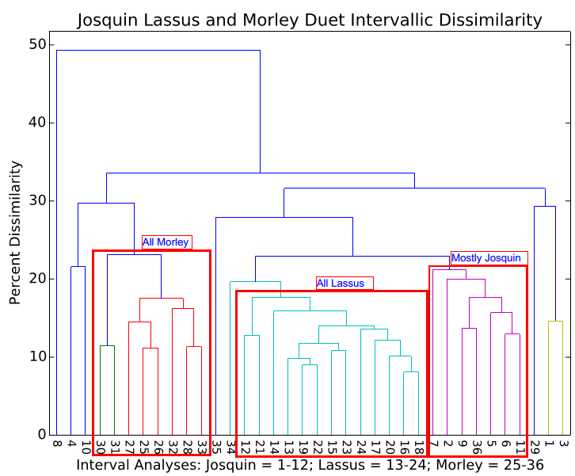

Searching for Latent Structure in Corpora with Hierarchical Clustering
Posted by ehopkins on September 03, 2015
Guest post from Alex Morgan, PhD student at McGill
Over the summer we’ve been working to integrate hierarchical clustering into our VIS Music Analysis Framework to help us reveal latent structure in musical corpora. Hierarchical clustering is a type of machine learning that groups data sets by how similar they are to one another. In hierarchical clustering, we begin with n groups each containing one data set. In the example below, each starting group is the intervallic profile of a two-voice piece by Josquin, Lassus, or Morley. The two most similar groups are then merged with one another, leaving us with n - 1 groups. This process is repeated until all of the starting singleton groups are merged into one big group. Then, we look at the visual representation of this hierarchical clustering, called a dendrogram, and focus on the intermediary stages of grouping to see if any meaningful clusters emerged. Put simply, dendrograms can help knowledgeable researchers reveal latent structure in large corpora.

The dendrogram above illustrates the clustering of the interval profiles of 36 separate duets, twelve each by Josquin, Lassus, and Morley numbered 1-12, 13-24, and 25-36 respectively. The grouping suggests that each of the three composers has a relatively regular and distinct intervallic vocabulary. Lassus’s twelve duets in particular demonstrate the highest density of similarity clustering meaning that they are the most similar to one another according to this analysis metric.
We are thrilled to include these experimental tools in the VIS analysis framework as they will help us quantify similarity between composers, modes, genres, time periods, etc. and eventually may point to a probable composer for pieces of uncertain authorship, as well as reveal potentially false attributions.